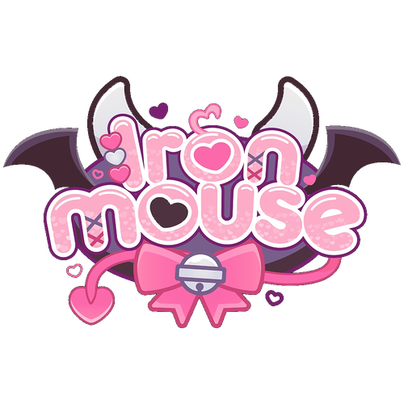
A Feature Documentary
PITCH DECK
♥ ♥ ♥
DIRECTED BY KUTHUMI CANNON
♥ ♥ ♥ ♥ ♥
♥ The Subject ♥
SHE IS THE MOST SUBSCRIBED FEMALE STREAMER ON TWITCH.
NO ONE HAS EVER SEEN HER FACE.
Her name is IronMouse. She streams from a bed in Puerto Rico, tethered to an oxygen concentrator, speaking through an anime avatar. She has never left her house. She has millions of followers. She just performed a live concert for 10,000 people.
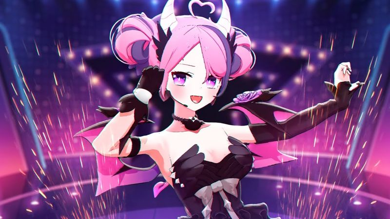
If you told most people "this is a documentary about a Twitch streamer," they'd check out. So Act I has to immediately bypass that assumption by grounding us in a universal human story: a girl who lost everything, whose parents gave up on her, who couldn't walk or speak or leave her bed, and who somehow refused to accept that as the end.
Kuthumi Cannon, Director
♥ Logline ♥
A Puerto Rican woman with a life-threatening immune deficiency becomes an anime character on the internet and reclaims her voice, her dreams, and human connection... only to learn that the price of being loved is letting people close enough to pay it.
GENRE Feature Documentary
FORMAT Archival + Reenactment + Virtual Production
TONE Amadeus meets Rocketman. Two visual worlds. One real story.
♥ ♥ ♥
♥ Who Is IronMouse ♥
0
Times Her Face
Has Been Shown
IronMouse is a VTuber, a live streamer who performs as an animated avatar. She has Common Variable Immune Deficiency (CVID), a condition that has kept her bedridden and homebound for most of her adult life. She cannot walk unaided. She requires supplemental oxygen. She streams from her bed in Puerto Rico using a laptop and motion tracking software.
♥ ♥ ♥ ♥ ♥
♥ The Story ♥
Three acts. Three questions. One life.
Act I
THE REAL WORLD
Will she survive?
A bright young girl with a dream of singing opera watches her body betray her, her dreams collapse, and her parents give up hope. The world shrinks to a bedroom and a screen.
♥
Act II
THE INTERNET
Will she succeed?
She creates an avatar, builds a community, and becomes the most subscribed female streamer on Twitch. She pays off her parents' house. But the digital world can't hold reality at bay forever.
♥
Act III
WORLDS COLLIDE
Will she be whole?
Hate, betrayal, and a conversation with a psychiatrist force her to confront the wound underneath everything: she doesn't believe she's worth the price of being loved.
♥
What happens to someone when every door is shut? The answer is she finds a door no one knew existed.
Kuthumi Cannon, Director
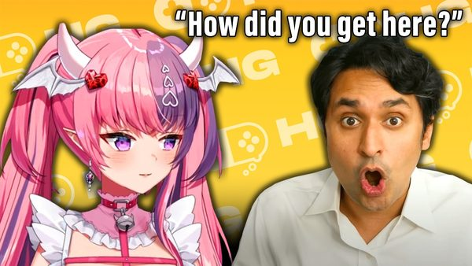
♥ ♥ ♥
♥ Two Visual Worlds ♥
THE REAL WORLD
Cinematic. Grounded. Warm light cooling to blue.
Shot like Moonlight or Beasts of the Southern Wild. A Puerto Rican household full of Catholic imagery, noise, and love. An opera classroom. A hospital room. A bedroom that gets smaller every scene. The actress playing IronMouse never speaks. Only archival voiceover.
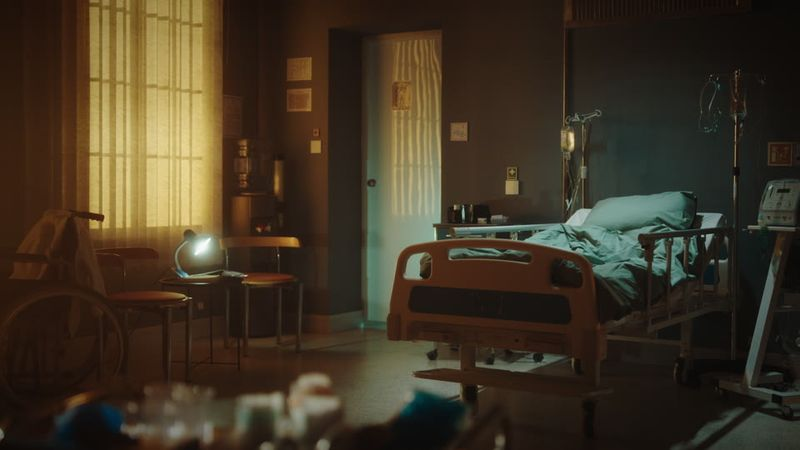
THE INTERNET
Virtual production. Neon. Stylized. A red light district.
Twitch reimagined as Amsterdam's red light district. Streamers in glass windows, audiences choosing who to watch. Built with virtual production (LED volume). IronMouse's window grows from dim to the brightest on the street. When COVID ends, the avatars leave. She can't follow.
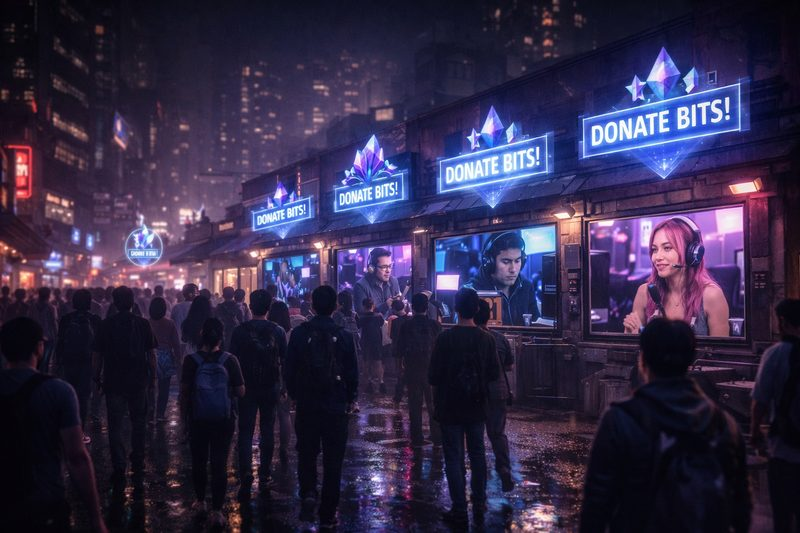
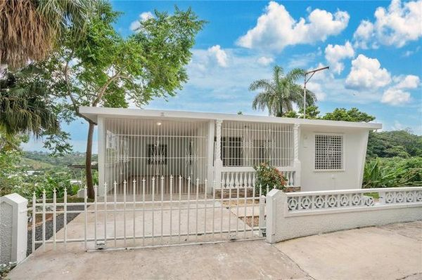
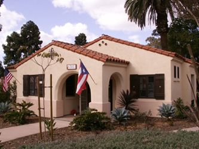
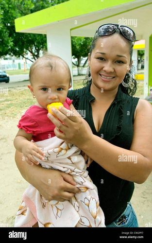
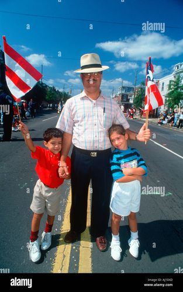
She's almost in denial about how bad it is, and that denial is kind of beautiful because it's also just a kid refusing to give up.
Kuthumi Cannon, Director
♥ ♥ ♥ ♥ ♥
♥ The Conversational Spine ♥
Dr. K (HealthyGamer) as the Amadeus device
The film is structured around an existing long-form interview between IronMouse and Dr. K (Dr. Alok Kanojia), a Harvard-trained psychiatrist who runs HealthyGamerGG. His questions guide the audience through her life. His observations name what the audience feels before they feel it. The conversation builds to a single moment:
DR. K: "That's the price people need to pay for being your friend. And you need to be okay with having people pay that price. Because here's the wild thing. You're worth it."
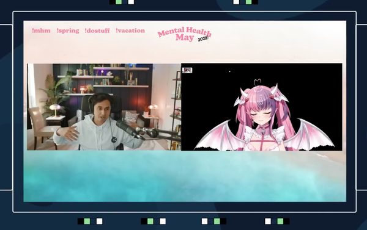
♥ ♥ ♥
♥ Lookbook ♥
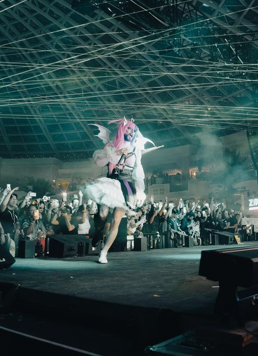
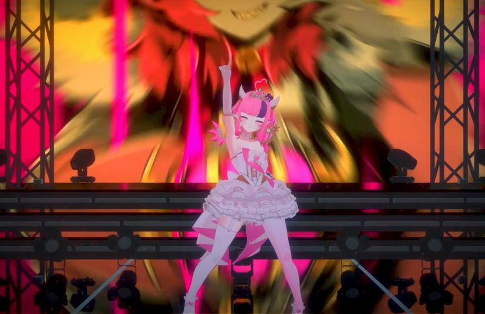
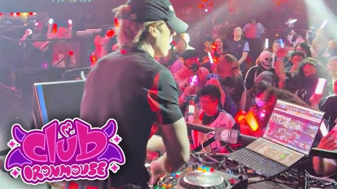
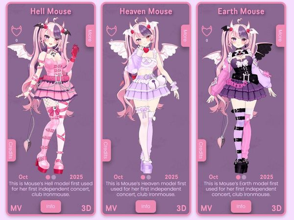
♥ ♥ ♥ ♥ ♥
♥ Key Moments ♥
THE TRON MOMENT
Computer light pulls her out of the real world into digital space. Rescue, not escape. The hum of the oxygen concentrator shifts from medical to digital.
THE DOORBELL
Post-credits. Quiet room. A doorbell. A purple shirt. A Cinnamaroll plushy. No face. The door opens. Cut to black. The whole film built to this.
MOM ON THE COUCH
After IronMouse pays off every bill, her mother sits on a couch watching a movie for the first time in her life. The simplest image. The most devastating.
THE CONCERT
Two actresses. One in mocap in Puerto Rico, dancing freely. One on stage in front of thousands. The opera dream planted at age four. She sings.
THE UNRELIABLE NARRATOR
She says she would never force anyone to be her friend. The visuals show the opposite: Connor defending her, community rallying. Used once. An act of love from the filmmaker.
SUITING UP
She straps on motion capture equipment. Her whole life, machines were attached to keep her alive. Now she attaches them by choice. Same body. Different purpose.
♥ ♥ ♥
♥ Three Versions of Mouse ♥
?
THE REAL PERSON
Actress. Never Speaks
A young Puerto Rican woman in a bed surrounded by medical equipment. Her silence is the point. The audience hears only archival voiceover. She communicates through her body, her stillness, her eyes.

THE AVATAR
2D/3D VTuber Model
The demon princess. Loud, emotional, funny, vulnerable. Animated by motion capture. She exists in the red light district, our virtual production Twitch metaphor. She is who Mouse chose to become.
THE PERFORMER
Cosplay Actress. On Stage
A different actress embodies the avatar in the real world for the concert finale. She sings. She dances. She is the opera dream made physical. The split between the two actresses IS the film's thesis.
♥ ♥ ♥ ♥ ♥
♥ Production Approach ♥
VIRTUAL PRODUCTION
LED volume / green screen for the red light district sequences. One recurring set dressed differently for each chapter. Cost-efficient, visually striking.
PRACTICAL REENACTMENTS
Shot on location in Puerto Rico. Real homes, real light, real spaces. Cinematic but intimate. Golden hour exteriors, practical lighting interiors.
ARCHIVAL VOICEOVER
All IronMouse dialogue sourced from existing streams, interviews, and the Dr. K conversation. No new interview needed. The voice is already recorded.
MOTION CAPTURE
For the concert finale. Actress in full mocap rig, standing and dancing for the first time in the film. The technical rig IS the visual metaphor.
♥ ♥ ♥
♥ Why This Film. Why Now. ♥
VTubing is the fastest-growing content format in the world. IronMouse is its biggest star. And no one outside this community knows her name.
BUILT-IN AUDIENCE
5.6M+ followers across platforms. Her community is passionate, organized, and proven to mobilize (charity streams raise six figures regularly). This film has an audience before it is finished.
CULTURAL MOMENT
VTubing, avatar culture, and digital identity are reshaping entertainment. This documentary is the first to treat it seriously as cinema, not novelty.
UNIVERSAL STORY
Underneath the technology: a story about chronic illness, family sacrifice, and learning to believe you deserve love. Themes that transcend the subculture.
IDF AWARENESS
IronMouse has raised hundreds of thousands for the Immune Deficiency Foundation. This film extends that mission. It is about the families, the caregivers, and the people fighting to live.
♥ ♥ ♥ ♥ ♥
♥ Director's Statement ♥
What drew me in was not the technology or the fame. It was a girl in a bed who decided she was not done yet.
This is not a film about VTubing. It is a film about what happens when you build a life inside a machine and then have to figure out how to be a person again. It is about a mother who prays in a hallway because she thinks God is punishing her. It is about a doorbell that means more than any concert.
I want to make the film that treats this community with the same cinematic seriousness we give to any other subject. No condescension. No novelty. Just a real story about a real person who happens to be invisible.
KUTHUMI CANNON
Director / Producer
♥ ♥ ♥
♥ The Team ♥
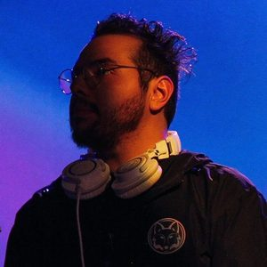
KUTHUMI CANNON
Director / Producer
Over a decade producing for YouTube channels like ScreenRant and TheRichest. Director of Cancel Me (short film). Specializes in internet culture storytelling.
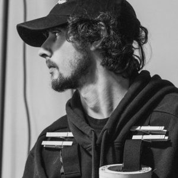
WIL FRANCIS
Cinematographer
Denver-based DP and Gaffer. Credits include Last Looks (2026) and Tears of a Clown (2021). Textured, emotionally driven visual style.
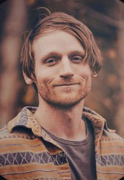
COLEBY VISKER
VFX Supervisor
Editor, colorist, and Nuke compositor. Multiple short films as on-set VFX Supervisor. Nominated twice for Best VFX at Colorado Film School.
♥
[SEEKING]
Executive Producer
Looking for financing partners who understand both documentary filmmaking and digital-native audiences.
♥ ♥ ♥ ♥ ♥
THANK YOU
THETATRON DIGITAL